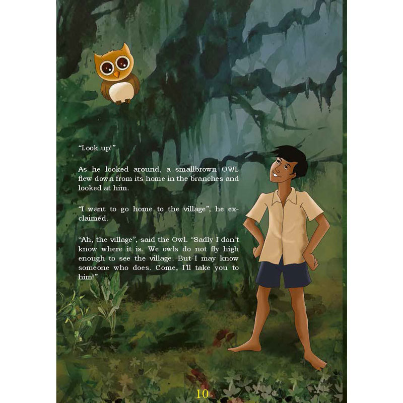
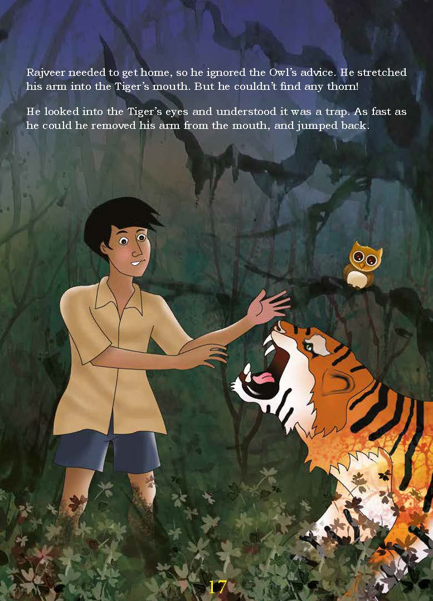

The story is about a boy in school who visits the library with his classmates and gets a book named “Jungle Adventures”. Just as he had begun to read, he could feel himself being sucked into the book. He did his best to struggle his way out of it but to no avail, and he soon found himself in the middle of a jungle filled with monkeys. A big monkey approached him, explaining that their monkey museum was invaded by evil snakes who held the power of a magical gold pot. The boy was handed a silver teapot and was told that only two drops of this tea could set him free and that only a human could do this task and save them.
When the boy arrived at the rock museum, he noticed many intricate carvings related to monkeys on the walls, and the cold museum was full of interesting artefacts, pots, and paintings. Soon, hissing sounds were heard, and the boy saw a glimpse of snakes before disappearing and being replaced with darkness again. Suddenly, a big snake with red eyes began to chase the boy, and he quickly ran to the room closest to him.
When the boy arrived at the rock museum, he noticed many intricate carvings related to monkeys on the walls, and the cold museum was full of interesting artefacts, pots, and paintings. Soon, hissing sounds were heard, and the boy saw a glimpse of snakes before disappearing and being replaced with darkness again. Suddenly, a big snake with red eyes began to chase the boy, and he quickly ran to the room closest to him. It was all muddy, and he found the golden pot in the middle of the room. Just as he was about to escape after grabbing it, he was caught by a scary snake and was tied to an uncomfortable metal chair. Only after the snakes had left was the boy reminded of the silver teapot. He held it and poured two drops of it. He then found himself right outside the museum. He ran for the jungle and handed the golden teapot to the monkey. He was given a medal and sent back to the school library with the book in his hand. He hastily placed the book back on the shelf and went outside to continue playing with his friends.
This short story on adventure clearly has many magical concepts that will be fun for kids. The fact that it involves talking monkeys, villainous snakes, magic teapots, and an enchanting book will give children the feeling to look forward to reading other books out of their own interest, influenced by this short story on adventure trip. It is also heavily metaphorical - in a literal sense in this story - as it emphasises the possibility that books do come to life; that when reading, one is transported to a different world. It is quite a common notion when it comes to reading and story-telling.